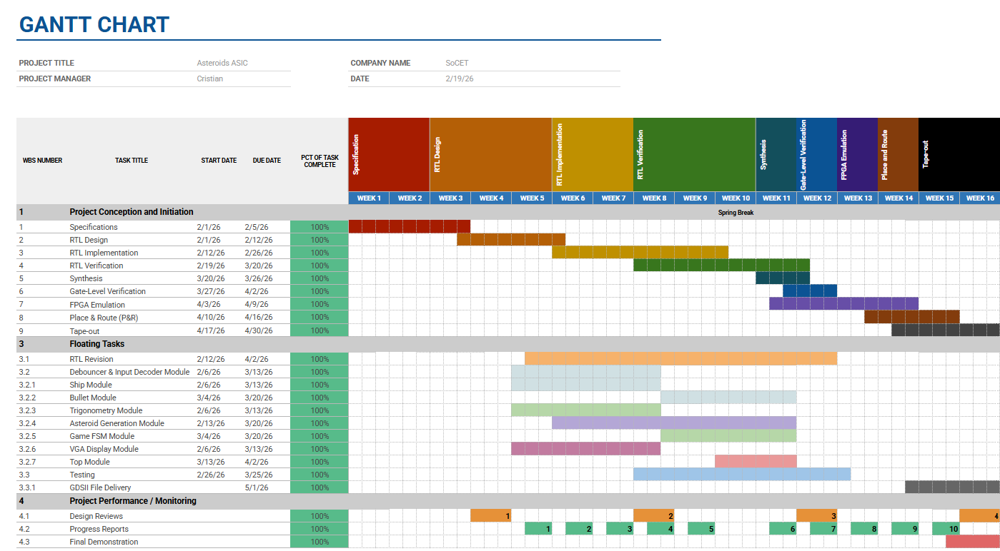
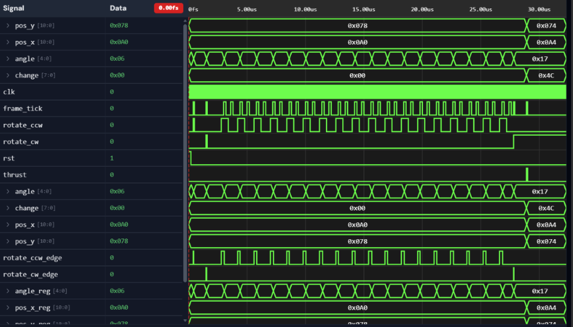
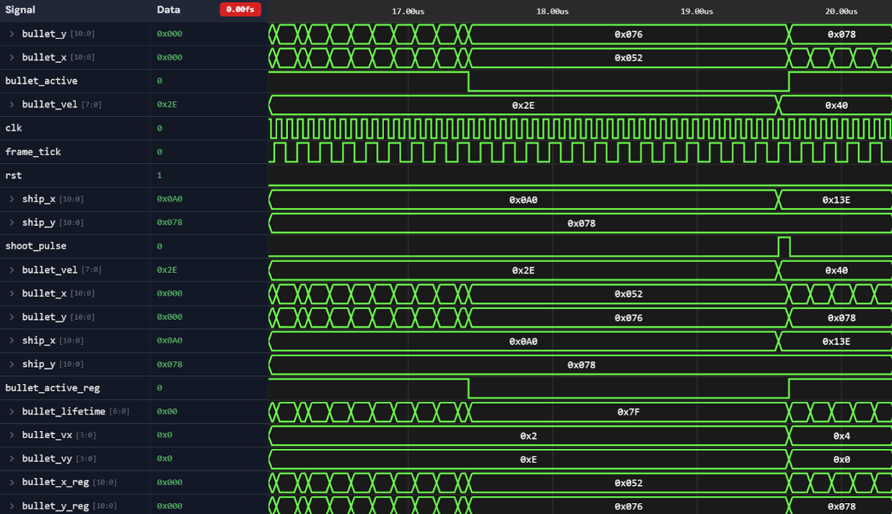
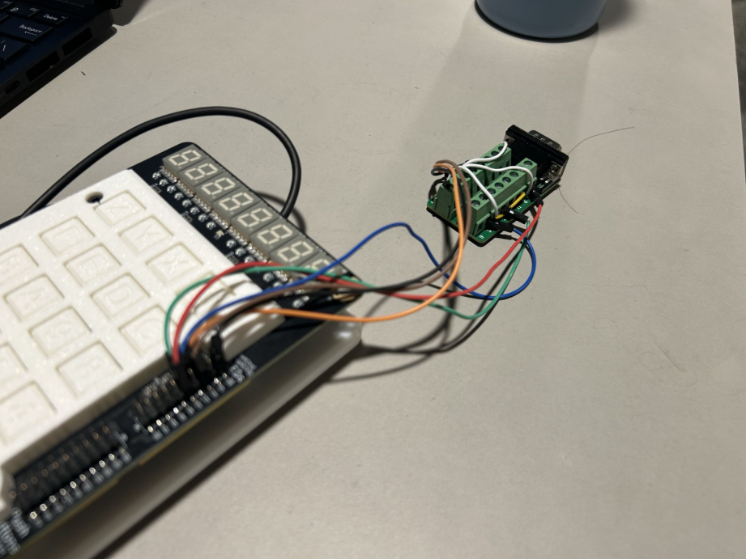
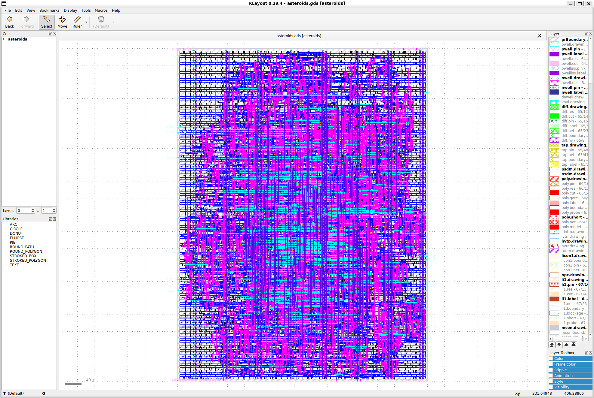

Atari Asteroids ASIC
Purdue STARS: Chip Design Project · Team of 4
Overview
This project was completed as part of the Purdue System-on-Chip Extension Technologies (SoCET) club's STARS: Chip Design Project. During the semester our four-person team designed and taped out a hardware implementation of Atari Asteroids. The system was written in SystemVerilog and taken through a complete RTL-to-GDSII ASIC design flow, including RTL simulation, synthesis, gate-level verification, FPGA emulation, place and route, and final tapeout.
The design generates a 320×240 VGA output and implements ship movement, projectile physics, asteroid behavior, collision detection, and game state logic entirely in hardware.
Project timeline

System architecture
The design was divided into dedicated RTL modules for game-state control, ship and projectile physics, asteroid behavior, sprite generation, trigonometric movement, and VGA output. The top-level module integrates these blocks into the complete hardware game.
RTL design & my contributions
My primary contributions to the team were the RTL design and module-level verification of the ship movement and projectile systems. These blocks translated player inputs and movement vectors into frame-by-frame game behavior, including rotation, position updates, projectile spawning and motion, object lifetime, and screen-edge wraparound. I developed and tested each subsystem independently before it was integrated into the complete game.
Ship movement & physics
I designed the ship module to maintain the player's position and orientation alongside the game's frame timing. The ship uses 24 discrete angular orientations, with clockwise and counterclockwise rotation wrapping between orientations 0 and 23. During thrust, signed X/Y movement values are applied to the ship's position, with additional logic handling horizontal and vertical screen wraparound.
ship.sv shows the taped-out RTL; ship_tb.sv
shows the module-level testbench used for rotation, thrust, and wraparound verification.

ship_tb.sv.
Projectile system
I designed the projectile module to spawn a bullet at the ship's current position and move it using signed velocity components derived from the ship's heading. The module tracks whether a projectile is active, prevents another projectile from spawning simultaneously, updates its position each frame, handles screen-edge wraparound, and automatically despawns it after its configured lifetime.
bullet.sv shows the taped-out RTL; bullet_tb.sv
shows the module-level testbench used for spawning, motion, lifetime, and wraparound verification.

bullet_tb.sv.
FPGA emulation
Prior to tapeout, the design was validated on custom iCE40HX FPGA hardware provided by the program. We programmed the FPGA with the game design and used a VGA breakout board to connect directly to a monitor, allowing us to test real gameplay behavior before committing the design to silicon.

Development progress
FPGA emulation let us validate gameplay systems independently before bringing them together. These clips progress from ship and projectile behavior, to asteroid behavior, and finally to the combined gameplay implementation.
Tapeout
After RTL and FPGA validation, the design was taken through the RTL-to-GDSII physical-design flow and hardened as a final ASIC macro. The completed macro was integrated into Purdue NEBULA, Purdue's Caravel-based multi-project environment for combining student designs into a shared chip.
The completed NEBULA chip was submitted through a ChipFoundry university shuttle for fabrication by SkyWater using the open-source SKY130A 130 nm process.

8,021 standard cells · 300 × 400 μm die · ~50% core utilization · DRC/LVS passed · SKY130A 130 nm
Final result
Complete FPGA-validated Atari Asteroids implementation.